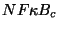
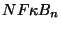
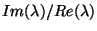

Next: Phénoméne de bistabilité et
Up: Le module de signalisation
Previous: Modèle compartimenté
Aussi dans le modèle compartimenté que dans le modèle
non-compartimenté on observe une évolution non monotone de
 au fil du temps. Les épaules dans la courbe de la
figure (
au fil du temps. Les épaules dans la courbe de la
figure (![[*]](crossref.png) ) ont trois origines:
) ont trois origines:
- -
- la compétition entre accumulation et transport. Après
l'accumulation suite à la dissociation des complexes, le niveau
décroit par transport entre cytoplasme et noyau. Ceci est le cas
de
 dans le modéle à deux compartiments. C'est un
effet non linéaire, car il agit loin de l'attracteur.
- -
- la
compétition entre accumulation et formation de complexe avec le
nouveau
 produit. Après accumulation de
,
commence à être produit dans le noyau et diminue le
niveau de
en repassant dans le cytoplasme et en
formant des complexes avec
. Il s'agit encore d'un
effet non-linéaire.
produit. Après accumulation de
,
commence à être produit dans le noyau et diminue le
niveau de
en repassant dans le cytoplasme et en
formant des complexes avec
. Il s'agit encore d'un
effet non-linéaire.
- -
- l'existence de valeurs propres avec
partie imaginaire non nulle pour la linéarisation du système près
de l'attracteur. Il s'agit d'un effet linéaire et sa raison
physique est une combinaison des deux effets précédents, mais près
de l'attracteur. Ceci produit des oscillations amorties. Ce
phénomène est responsable de l'épaule correspondant à une
demi-période pour
 dans le modéle à deux
compartiments. Ce phénomène n'est pas responsable des épaules de
et dans le modéle à deux compartiments
car en faisant varier le rapport partie réelle sur partie
imaginaire (en modifiant le niveau de la kinase), leurs épaules ne
changent pas tandis que celle de
est modifiée.
Notons que cette épaule peut être renforcée pour
,
via l'effet non linéaire précédent, si on permet la formation de
complexes également à l'intérieur du noyau. Nous n'avons pas pu
remarquer plusieurs périodes car
 reste
trop petit (proche de 1, voir la figure () pour un
grand nombre de paramètres. D'autres réactions (non considérées
ici) doivent augmenter ce rapport ainsi que le nombre
d'oscillations, et permettre de retrouver les oscillations
obtenues expérimentalement.
Next: Phénoméne de bistabilité et
Up: Le module de signalisation
Previous: Modèle compartimenté
Ovidiu Radulescu
2004-01-21